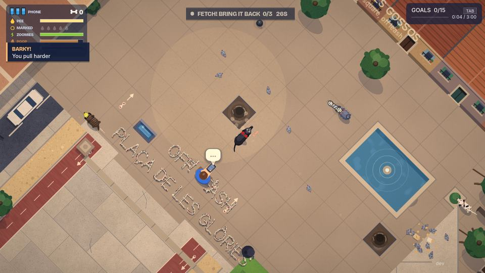

La Diagonal
The avenue that cuts the grid
Broad Avinguda Diagonal slicing diagonally straight across the orthogonal grid toward Plaça de les Glòries. Newspaper kiosks anchor the wide stone median while the green tram glides past grass-lined tracks without making a sound.
- Off-leash stop
- PLAÇA DE LES GLÒRIES (Open plaça)
- Beat the clock
- Under 3:00
Screenshots



Goals (15)
- Mark 5 spots
- Have 4 good long sniffs
- Get the phone home without a scratch
- Get yourself home without a bump
- Get your business bagged
- Bring the ball back 3 times
- Scarf down 2 dropped snacks
- Dodge the tram 3 times
- Get home without the tram bumping you
- Bark at the newspaper kiosk
- Land an x3 trick combo
- Snatch the bocadillo off the bench
- Spell LEASH
- Find the hidden pernil
- Beat the clock (under 3:00)